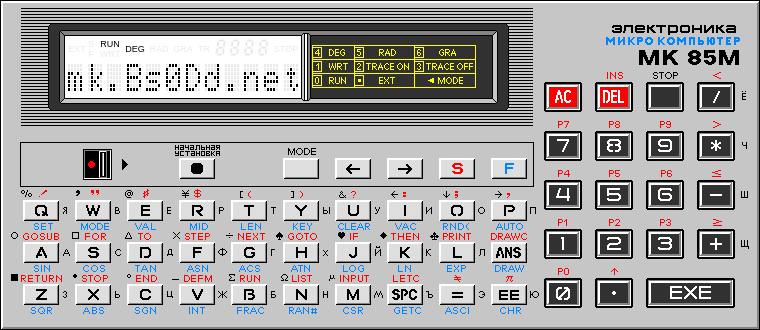
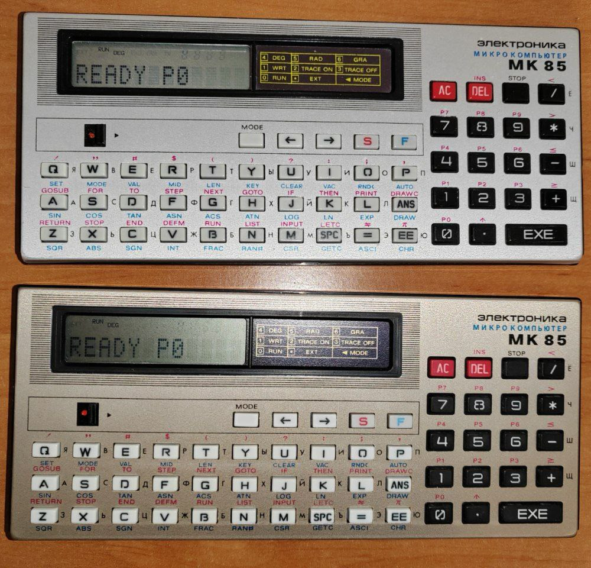

About JS85EMU

JS85EMU is an emulator of the Soviet microcomputer/microcalculator/personal computer
(exactly these three types are mentioned on the box, in the user manual, or on the device itself) Elektronika MK85(M).
GitHub: JS85EMU
2024 © Compys S&N Software
|
Based on js-mk85 emulator
2016 © Alexei Gordeev a.k.a. KP1533TM2 |
Analysis of MK-85 operation and materials
2006-2021 © Piotr Piatek a.k.a. piotr433 |
I express special gratitude to the participants of the Sergei Frolov's chat
(Retro computers, calculators and other retro) for help in finding bugs, debugging, and information about the operating features of the device.
Changelog
-> Version 1.4 - 25.07.2024
- "Debugger" tool introduced:
- Execution control: pause, step by step (1 or more steps at a time), breakpoint at address
- View and edit RAM in "bytes" and "words" modes
- Viewing the state of processor registers (and special registers CPUCTRL, PP and KEYB)
and editing (except KEYB)
- View disassembled data in ROM and RAM (lite-disasm11)
and replace it (lite-asm11) in memory (edited ROM is not saved on page reload)
- Display data in hexadecimal or octal
- Added tools for working with BASIC programs:
- Getting a list of contents in variables
- Exporting program code into text files (Unicode encoding)
- Loading programs into memory. One file can contain several programs,
for each you can optionally specify a number (the line "Program *" before the
beginning of the code),
otherwise the program will be loaded into the first free cell.
Lines without a number are treated as comments and ignored.
The end of the program is indicated by two empty lines.
- Added (previously missing) instructions MARK, ASHC, SXT and fixed a bug in ASH
(although the functionality of the operations is questionable; the firmware does not use them)
- Added support for a software switch (12 bit in CPUCTRL),
now when you press
the STOP key 21 times the emulator will turn off,
as in the original
(the handler in the firmware does not recognize the
STOP key and
turns off the system after it could not recognize the key 21 times in a row)
- Depending on the size of the RAM, the name of the virtual device changes
("MK 85" with 2KB RAM, otherwise "MK 85M")
- Pause no longer turns off when switching between tabs
- Various minor bug fixes
-> Version 1.02 - 09.07.2024
- Now each button that opens a page opens it in its own window
(previously all buttons opened the page in the same window)
- Added utility for encoding pixels into character 96 format.
You can send the encoded string directly to the device
(via keystroke emulation)
- The panel now shows whether the device clock is stopped
-> Version 1.01 - 07.07.2024
- Fixed a bug with turning on a switched off device after switching to another tab and back
-> Version 1.00 - 06.07.2024
- First public version of the emulator
-
Changes compared to the original js-mk85 emulator:
- The interface has been redesigned, the graphics are taken from the emulator by Piotr Piatek
- Fixed increment/decrement addressing error for SP register (R6)
- Implemented missing processor instructions
- Implemented special instructions for console (HALT) mode
(although their correct operation is not guaranteed)
- Added the ability to turn it off/on
- Added settings panel
- Support pause and restart
- It is possible to display extended characters from the original overlay
- Vibration when pressing keys (mobile devices only)
- Showing the amount of free memory for programs
(the MK85 indicator is not able to adequately display a number greater than 9999)
- Showing the number of allocated variables and the space they occupy
- Full keyboard support (layout diagram available via button)
- Support easy loading of RAM or ROM from files
RAM memory can also be saved to a computer
- Changing RAM size (from 2 to 32 KB) and automatic memory initialization
- Storing RAM and user ROM in local storage instead of cookies
- Turbo mode support (turn on with pressed plus or by button)
- Ability to turn on Turbo on the go without restarting the emulation
- Ability to change the speed of standard and Turbo modes
- Planning to add: debugger and help
- Perhaps planning an utility to encode pixels into character 96 format
